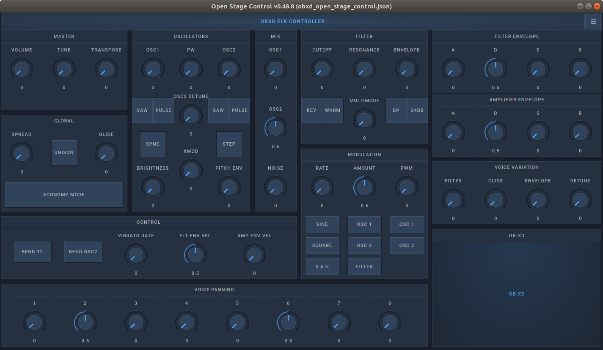

Legacy Examples Overview#
All Elk example files can be downloaded from our elk-examples repository, with the binary files they depend on available in the Releases section.
The examples include first some basic plugin hosting examples, with GUI templates demonstrating how they can be remote controlled over Open Sound Control.
Then we present a set of complete instrument examples, which also involve the Blackboard, Sensei, and Python glue programs for integrating these into a complete instrument.
Basic Plugin Hosting#
For the first three examples, on hosting and controlling a plugin, we have chosen to use the same instrument, the MDA JX10 synthesizer, using ports of it for all three different plugin formats. This allows us to better illustrate the slight differences between the formats, than if we had used a different plugin for each.
Note that the linked files below, are all built for running natively on Linux x86-64. Plugin binaries built to run natively on the ARM-based Elk Pi are included in the development image for those boards.
Note: In our Open Stage Control template, the address for the JX10 synth is easily changed: enable editing, click on the “JX-10 ELK CONTROLLER”-title, and then, in the ‘osc’-section of the editor, set the ‘address’ field to “/parameter/your_synth_name”, instead of the current “/parameter/jx10”.
MDA JX10 VST3#
This example requires the following files:
config_play_vst3.json - the Sushi configuration file.
mda_jx10_vst3_open_stage_control_gui.json - the Open Stage Control GUI.
mda-vst3.vst3.tar.xz - a build of the MDA VST 3 plugins, containing also the JX 10 Synthesizer binary.
mda-vst3-touchosc-gui.touchosc - a TouchOSC GUI controller, mirroring the controls in the Open Stage Control GUI.
First unpack the tar-file with the plugin to your local drive, and edit the config_play_vst3_desktop.json to refer to that path, or place it in /usr/lib/lxvst/, the default path in the configuration path, and the path commonly used for vst plugins on Linux.
The example serves to demonstrate how to instantiate Sushi with a single VST 3 instrument reacting to MIDI and OSC control messages, sent using the accompanying GUI file for Open Stage Control.
This is the example referred to also in our guide for getting started with the Elk Development Kit Software.
MDA JX10 VST2#
Control of plugin parameters is to certain extent different between VST 2 and VST 3, which we illustrate by including two examples involving the same synth plugin, JX 10, both for VST 2 and VST 3.
This example requires the following files:
config_play_vst2_desktop.json - the Sushi configuration file.
mda_jx10_vst2_open_stage_control_gui.json - the Open Stage Control GUI.
mda-vst2-plugins.tar.gz - a build of the MDA VST 2 plugins, containing also the JX 10 Synthesizer binary.
You will notice that the OSC GUI for the VST 2 version lacks controls for Pitch and Modulation, which the VST 3 version has.
The reason is, those are in VST 2 received and handled as MIDI values, from your MIDI controller keyboard, while, for the VST 3 version of the same plugin, they are control parameters exposed over the VST 3 standard.
The instructions for the VST 3 example in the guide for getting started with the Elk Development Kit Software translate straightforwardly also for this VST 2 example - just read VST 2 where in the text and paths, VST 3 is specified.
IMPORTANT NOTE: The MDA JX10 VST 2 plugin will not work on the Raspberry Pi Elk, purely due to a bug in the plugin. We nonetheless leave this example, to best illustrate the differences between using VST 2 and VST 3. Also, the MDA JX10 VST 2 will run fine on desktop Linux, as the bug does not affect that platform.
LV2VST Wrapper, with MDA JX10 LV2#
This example requires the following files:
config_play_lv2vst.json - the Sushi configuration file.
mda_jx10_lv2vst_open_stage_control_gui.json - the Open Stage Control GUI.
lv2vst_plugin.tar.xz - the LV2VST plugin, and it’s corresponding .whitelist file, referring it to which LV2 plugin it should load.
mod-mda-JX10.lv2.tar.xz - the LV2 MDA JX 10 plugin for x86 desktop Linux.
Again, the instructions for the VST 3 example in the guide for getting started with the Elk Development Kit Software, translate straightforwardly also for this example.
The extra preparation step is needed however, to extract the mod-mda-JX10.lv2.tar.xz file content to /usr/lib/lv2/mod-mda-JX10.lv2. This is one of the paths where LV2 plugins should be installed, according to the LV2 standard’s conventions.
Since the Sushi configuration file does not refer to absolute plugin paths for LV2, the .json file can be the same for both desktop Linux, and the RPi.
Multi FX#
This example requires the following files:
elk_multi_fx_desktop.json - the Sushi configuration file.
elk_multi_fx_pi.json - the Sushi configuration file.
elk_multi_fx_open_stage_control_gui.json - the Open Stage Control GUI.
mda-vst2-plugins.tar.gz - a build of the MDA VST 2 plugins for x86 desktop Linux, containing the effects the example invokes.
This is a more complex example, demonstrating a simple ‘glue’ app between Sushi and an external hardware controller or software GUI, to enable 2-way communication between the controller and Sushi, as well as setting parameter values and programs over gRPC. An Open Stage Control setup is provided, but the OSC paths are deliberately named so as to mimic those of a hardware control surface set up with Sensei.
The example consists of 4 simple effect plugins in series, each having 1 adjustable parameter, an enabled/disabled button with indicator and 4 preset slots.
JUCE Example C++ Source Code#
The source code, CMake, and JUCE .jucer file, for building our Elk JUCE example VST 3 plugin.
For a configuration file, and Python glue program, please refer to the folder bloackboard/elk-juce-example, of the elk-examples repository.
Complete Blackboard Examples#
The examples under the blackboard folder, are specifically made to run on the Elk Pi, using the Blackboard controller board. They are compatible both with the Raspberry Pi 3 and Pi 4, but you will need to separately download the plugin binaries specific to each platform, from the examples repository’s releases section: Pi3, & Pi4.
Running these is not possible on the desktop, since they depend on the Blackboard, and the Sensei app to interface with it, which can only run on a RPi with an Elk Pi board.
All examples depend on the same Sensei configuration file, which is available globally on your RPi starting from image version 0.7.2.
The also depend on two Python libraries provided by Elk, and available globally on your RPi starting from image 0.7.2: elkpy, wrapping the gRPC and OSC calls to Sushi and Sensei, and elk_ui, wrapping the interfacing with the screen on the Blackboard.
All examples are created with Sushi configuration files that expect the plugin binaries for your RPi to be available in /udata/elk-examples/plugins. If you placed the example binaries in a different folder you will need to modify each configuration, e.g. /blackboard/controller-examples/sushi-configs/obxd_step.json, to point to that new location.
Even if you only want to run one of the examples, copy the entire elk-examples repository to your RPi’s /udata folder, as many of the examples use files located throughout the repository so as to minimize unnecessary duplication.
Minimal#
The example is purposefully minimal, comprising of under 75 lines of Python code, comments included. It demonstrates the smallest amount of programming that still can produce a usable self-contained instrument.
It consists of the OB-Xd synthesizer, and our internal step-sequencer.
The glue app main_app_minimal exposes the Cutoff, Resonance, Attack and Release parameters of the OB-Xd, each controllable with one of the four Blackboard faders. The current parameter and value are displayed on the screen.
The buttons on the Blackboard send Note on/off messages to Sushi, and also updates the LED above the button pressed. This way you can interact with the sequence played even if you do not have a midi keyboard. Or, if you turn off the sequencer starting by default (”playing_mode” : “playing” in the sushi config), you can play melodies with the buttons.
To run the example, execute the batch script $ ./run_sequencer_minimal, in the folder /udata/elk-examples/blackboard/controller-examples.
In the same folder, you can then call the $ ./stop script to terminate all the processes.
These scripts are provided as a convenience, and to demonstrate the commands needed to start and stop the example.
General Controller#
This example uses the same Sushi configuration file as the previous minimal example, of OB-Xd, and step sequencer.
The Python glue app it uses however is much more extensive, and general purpose: no matter the Sushi configuration, the glue app will use the Blackboard controls to fully expose all plugins’ parameters for modification using the Blackboard’s physical controls.
Pressing the encoder cycles through the available devices, exposing their parameters on the screen:
main [gain, pan]
sequencer [pitch, step, step_ind, for each step]. See our documentation on internal plugins for more details on the step sequencer.
synth - All of OB-Xd’s ~80 parameters - too many to list here. An OSC reference text file is available in elk-examples/blackboard/obxd-sequencer/osc_address_patterns_for_obxd.txt.
By rotating the encoder, the page changes, exposing the next set of 4 parameters for the current plugin.
Finally, each of the currently displayed 4 parameters, are editable using the Blackboard’s four faders.
The buttons have the same note-playing functionality as in the minimal example.
To run the example, execute the batch script $ ./run_sequencer_general, in the folder /udata/elk-examples/blackboard/controller-examples.
In the same folder, you can then call the $ ./stop script to terminate all the processes.
Multi-FX, for Blackboard#
This example invokes the same Sushi configuration file as the multi-fx example for Desktop Linux / general Elk Pi described above. In this case however the example also instantiates the general controller, allowing the control of the parameters of all four loaded effects, switching between them using the push-encoder.
To run the example, execute the batch script $ ./run_multi_fx, in the folder /udata/elk-examples/blackboard/controller-examples.
Important: To use the blackboard’s rightmost 2 jack audio inputs, you need to plug a 3.5mm stereo mini-jack adapted/cable into the elk-pi input as well, leaving cable’s/adapter’s other end unconnected. That bridges the connection to the Blackboards inputs - if you don’t the inputs will not reach the elk-pi. Or, just use the minijack input on the elk-pi right away, if that is more convenient to you.
In the sample folder, you can then call the $ ./stop script to terminate all the processes.
JUCE Example, for Blackboard#
The Elk JUCE example plugin is accompanied by a Python glue program for integrating it with the Blackboard controls, and with an instance of the plugin running on a desktop computer, synchronizing the two plugin instance’s (Elk Pi and desktop) state over OSC.
Again, we provide batch scripts to start and stop, in the folder /udata/elk-examples/blackboard/elk-juce-example.
In this repository’s releases section we provide downloads for the plugin built for Ubuntu Linux, Windows and OS X - executable as standalone, or as VST 2 (previously), and now also a new VST 3, given the added JUCE VST 3 Linux support.

To achieve the bi-directional control synchronization between the instances running on the desktop and on the Elk Pi, the two devices need to be on the same network, and the desktop’s IP address needs to be assigned to GUI_APP_ADDRESS in the Python glue app: /blackboard/elk-juce-example/main/main_app.
Also enter the Elk Pi’s IP address in the “Target IP Address” field of the Desktop instance’s GUI.
Now, if you move a slider on the desktop GUI, the same parameter will be affected on the Elk Pi, with the display showing the new value received.
OB-Xd Sequencer#
This example is an adaptation of the example we used when introducing the Elk Pi board at the 2019 ADC conference. Since it was very well received, we want to provide a version of it also for the Blackboard.
It also comes with a fully-featured Open Stage Control GUI for remote-controlling over OSC.

Benchmark Synth#
This is a simple tool that uses Sushi’s internal timing mechanism and its gRPC API to accurate measure the CPU load of a synthesizer at NoteON events.
See the README.md in the benchmark-synth subfolder for more details.